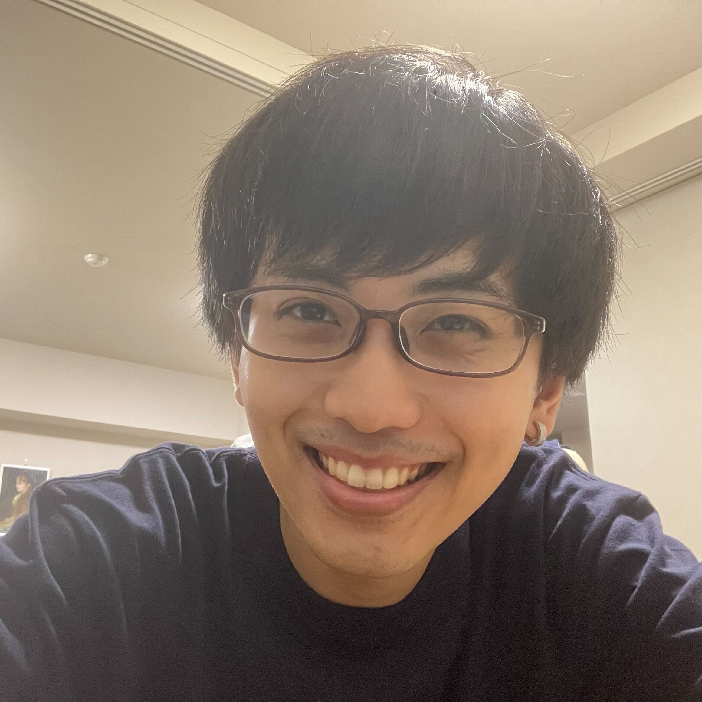

Chihiro HASEGAWA

Biography
Chihiro HASEGAWA (長谷川 千広 in Japanese) is a cyber security engineer in Japan. He started to work in the cyber security industry from 2018. He was in charge of administration for IT infrastructure of Security Operation Center, analyzing malware including code analysis and researching threat intelligence. Nowadays, he is eager to learn cloud and container security. Please feel free to contact encry1024[at]gmail.com if you need any further information.
Skill
- Reverse Engineering
- x86, amd64, PE, ELF, IDA/IDAPython, GDB
- Penetration Testing
- Server and Network Administrator
- Ubuntu, Windows Server
- Cisco, IIJ
- Infrastructure as Code
- Ansible, Terraform
- Containerization
- Docker, Kubernetes
- Software Development
- Experienced: Python, Golang, Ruby, C, C#, Rust
Career
-
Jul 2023 - Present Mercari, inc.
-
Security Engineer: Threat Detection and Response
- Software Development (Golang, Python), Detection Engineering (Rego)
-
Security Engineer: Threat Detection and Response
-
Apr 2018 - Jun 2023 Initiative Japan Inc.
- Security Analyst: Malware Analysis, Network and Server Administrator
- SRE: Azure, Kubernetes
-
Apr 2014 - Mar 2018 (Education) Hosei University, Tokyo, Japan
- Bachelor of science and engineering
Experience
- 2022
- SANS SECURITY 488 Cloud Security Essentials (attended)
- Won 1st place of CTF Challenge
- Aug 2022 Cloud Native Security Conference 2022
- SANS FORENSICS 710 Reverse-Engineering Malware: Advanced Code Analysis (attended)
- IIJ Engineers Blog
- 2021
- Attacking and Defending Active Directory - Advanced Edition Bootcamp by Nikhil Mittal (attended)
- IIJ Engineers Blog: Markdownでスライドを作る、Marpのすゝめ
- 2019
-
Learning ARM Exploit Development
- Created the material for ethical hacking
- SANS FORENSICS 610 Reverse-Engineering Malware: Malware Analysis Tools and Techniques (attended)
- SANS SECURITY 660 Advanced Penetration Testing, Exploit Writing, and Ethical Hacking (attended)
- Black Hat USA 2019 (support staff for training)
- IIJ Engineers Blog
- 2018
- IEEE 14th International Colloquium on Signal Processing & its Application (CSPA 2018) at Malaysia
- SECCON Beginners 2018 at Tokyo (trainer of pwn)
- 2017
- セキュリティコンテストのためのCTF問題集（co-author）
- Security Camp 2017 (tutor)
- SECCON Beginners at Morioka, Sendai, Tokyo(trainer of reversing)
- CODE BLUE 2017 (student staff)
- Cpaw LT @ Co-Edo: mipsシェルコード入門
- 2016
- Security Camp 2016 (attended)
- Cybozu Summer Internship (attended)
- SECCON 2016 Osaka
- Won 1st place of CTF Challenge
- CODE BLUE 2016 (student staff)
- SECCON 2016 Finals
- Others
- Competition event staff
- Cpaw CTF (created challenges)
- TokyoWesterns CTF (created challenges)
- Cpaw AI Competition 1st, 2nd (created challenges)
Qualification
- GIAC Reverse Engineering Malware (GREM)
- GIAC Exploit Researcher and Advanced Penetration Tester (GXPN)
- Certified Kubernetes Administrator (CKA)
- Offensive Security Certified Professional (OSCP)
- Certified Kubernetes Security Specialist (CKS)
- Microsoft Azure Fundamentals (AZ-900)
- Certified Information Systems Security Professional (CISSP)
-
National Qualification
- Information Technology Passport Examination
- Fundamental Information Technology Engineer Examination
- Applied Information Technology Engineer Examination
- Registered Information Security Specialist Examination
- Network Specialist Examination